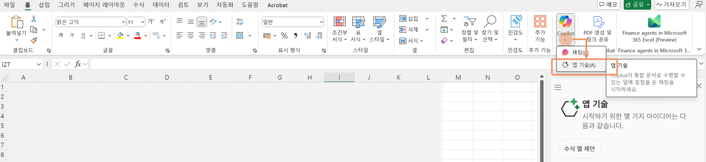

In this quest, we will use statistical data to analyze the market and commercial districts, and uncover insights.
- Go to the following link and download the named "Seoul Commercial District Data.xlsx".
- Open Excel and load the downloaded file. To fully use Copilot, choose "Save a Copy (Save As)" and upload it to OneDrive.
-
In the Excel Home menu, click the arrow under the "Copilot" icon on the right and select the "App Skills" menu.
 - Enter the sample prompts below. Modify the parts in [square brackets] as you like (and remove the brackets themselves).
- Creatively change the content to explore different insights from the data.
- If you need more in-depth data analysis, you can use Advanced Analysis.
- In the prompt window, type "Use Advanced Analysis mode to get deeper results".
- Click the "Start" button for Advanced Analysis.

Use statistical information to analyze the data and uncover insights.
Add a column for floating population by region.
Calculate the floating population per store and add a column named "Floating Population Ratio".
Show the top 5 regions with the highest floating population ratio.
Add a store survival rate column by region. I want to know the 3-year survival rate for all stores.
What is the average 3-year survival rate?
Add the number of newly opened and closed stores by region for 2024.
Add a closure rate column.
Highlight the regions where the number of closures is higher than the number of openings.
Use Advanced Analysis mode to conduct deeper analysis.
Visualize the correlation between floating population and 3-year survival rate.
What is the correlation between the proportion of franchise stores and the 3-year survival rate?
Compare the 3-year survival rate between regions with high and low franchise proportions.
Visualize the trend of newly opened stores by region.
I want to score each commercial district. Propose a scoring model.
Recommend weight values for each variable used to score commercial districts.
Calculate the commercial district scores using the recommended weights.